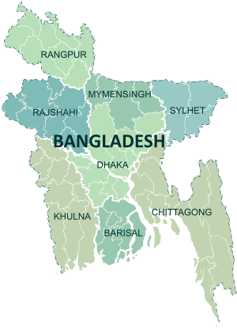

Bangladesh (/bæŋləˈdɛʃ/;[15] Bengali: বাংলাদেশ, pronounced [ˈbaŋlaˌdeʃ] (audio speaker iconlisten)), officially the People's Republic of Bangladesh, is a country in South Asia. It is the eighth-most populous country in the world, with a population exceeding 163 million people in an area of either 148,460 square kilometres (57,320 sq mi) or 147,570 square kilometres (56,980 sq mi),[7][16] making it one of the most densely populated countries in the world. Bangladesh shares land borders with India to the west, north, and east, Myanmar to the southeast, and the Bay of Bengal to the south. It is narrowly separated from Nepal and Bhutan by the Siliguri Corridor; and from China by 100 km of the Indian state of Sikkim in the north.[17] Dhaka, the capital and largest city, is the nation's economic, political, and cultural hub. Chittagong, the largest seaport, is the second-largest city.
Bangladesh forms the sovereign part of the historic and ethnolinguistic region of Bengal, which was divided during the Partition of British India in 1947.[18] The country has a Bengali Muslim majority. Ancient Bengal was an important cultural center in the Indian subcontinent as the home of the states of Vanga, Pundra, Gangaridai, Gauda, Samatata, and Harikela. The Mauryan, Gupta, Pala, Sena, Chandra and Deva dynasties were the last pre-Islamic rulers of Bengal. The Muslim conquest of Bengal began in 1204 when Bakhtiar Khalji overran northern Bengal and invaded Tibet. Becoming part of the Delhi Sultanate, three city-states emerged in the 14th century with much of eastern Bengal being ruled from Sonargaon. Sufi missionary leaders like Sultan Balkhi, Shah Jalal and Shah Makhdum Rupos helped in spreading Muslim rule. The region was unified into an independent, unitary Bengal Sultanate. Under Mughal rule, eastern Bengal continued to prosper as the melting pot of Muslims in the eastern subcontinent and attracted traders from around the world. Mughal Bengal became increasingly assertive and independent under the Nawabs of Bengal in the 18th century. In 1757, the betrayal of Mir Jafar resulted in the defeat of Nawab Siraj-ud-Daulah to the British East India Company and eventual British dominance across South Asia. The Bengal Presidency grew into the largest administrative unit in British India. The creation of Eastern Bengal and Assam in 1905 set a precedent for the emergence of Bangladesh. In 1940, the first Prime Minister of Bengal supported the Lahore Resolution with the hope of creating a state in eastern South Asia. Prior to the partition of Bengal, the Prime Minister of Bengal proposed a Bengali sovereign state. A referendum and the announcement of the Radcliffe Line established the present-day territorial boundary of Bangladesh.
| Division | Capital | Established |
| Chittagong Division | Chittagong | 1 January 1829 |
| Dhaka Division | Dhaka | 1 January 1829 |
| Rajshahi Division | Rajshahi | 1 January 1829 |
| Khulna Division | Khulna | 1 October 1960 |
| Barisal Division | Barisal | 1 October 1960 |
